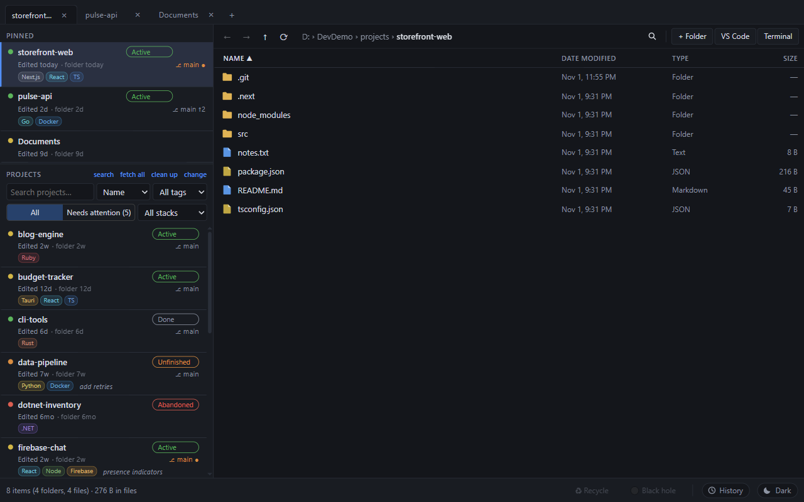
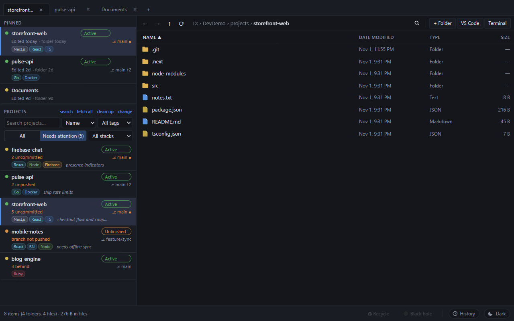
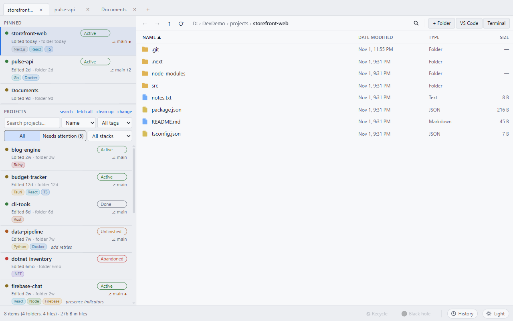
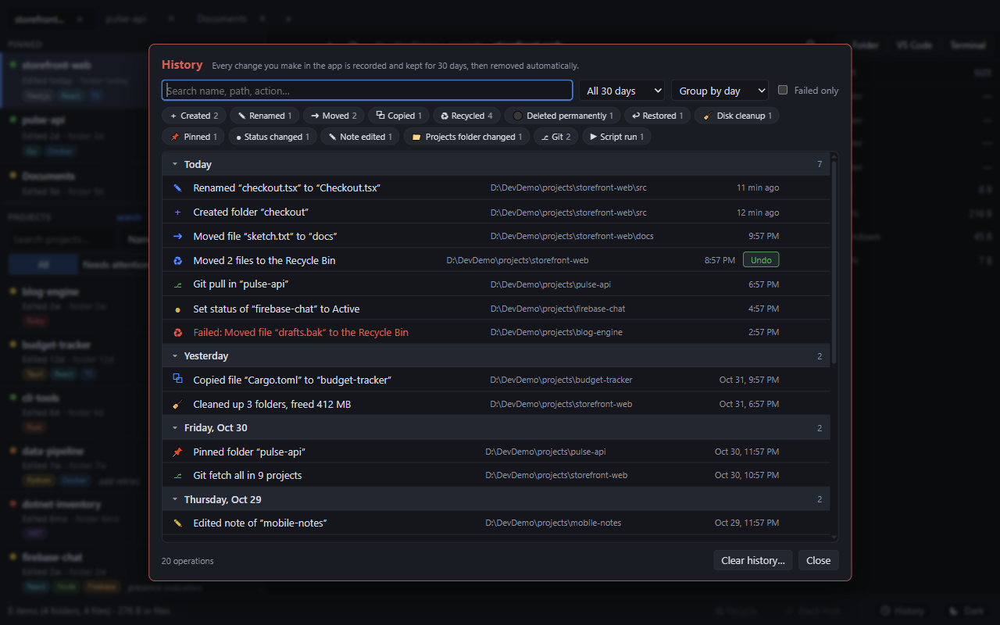
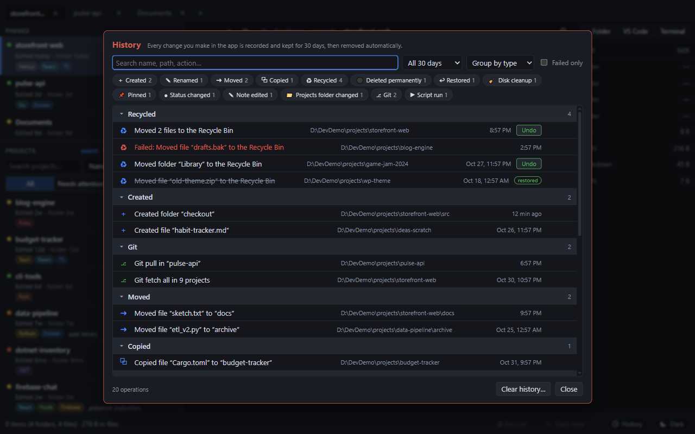
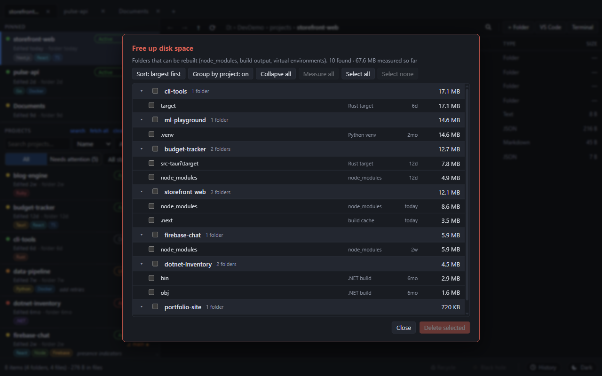
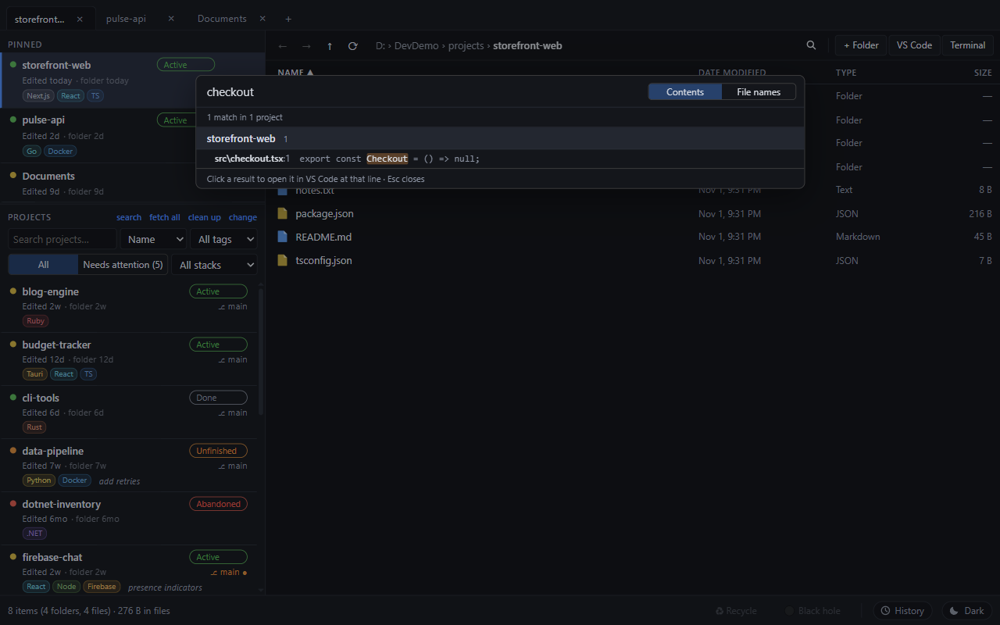
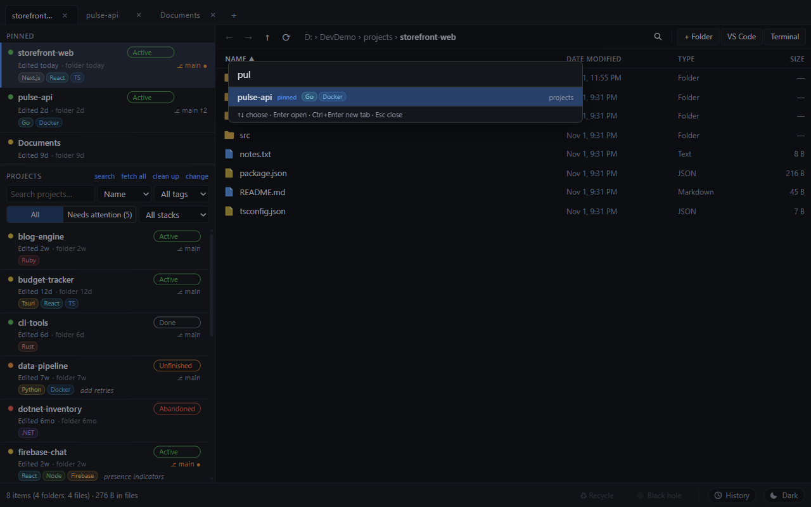

Get started
Requirements: Node 22+, stable Rust and, on Windows, the Visual Studio C++ Build Tools. Git is optional.
git clone <your repository url>
cd DevFileExplorer
npm install
npm run tauri devThe first build is slow. On first launch click change in the Projects header and choose the folder that holds your projects. Every subfolder becomes a card.

Project dashboard
- Age dot and dates: green under a week, yellow under a month, orange under three months, red older. "Edited" is the newest real change inside (generated folders such as
node_modulesare ignored); "folder" is the folder's own date. - Status: click the pill to set Active, Unfinished, Abandoned, Done or Idea. Add a one-line note for what is left to do.
- Git: branch, a dot for uncommitted changes,
↑2for two unpushed commits. - Stack chips are detected automatically (Tauri, Next.js, React, Rust, Python, Go, Docker and 17 more).
- Pin any folder from the context menu or by dragging it into the pinned area. Pins can be anywhere on disk.
- Search by name, sort by name, dates or status, and filter by tag and stack.
Needs attention
Switch from All to Needs attention to list only projects that deserve a look, with the reason in orange: uncommitted changes, unpushed commits, a branch that was never pushed, Active or Unfinished projects untouched for a long time, or commits you are behind. Repositories without a remote are never flagged as unpushed.

Browsing and files
- Tabs: Ctrl+T new, Ctrl+W close, middle-click a folder to open it in a new tab, drag to reorder. Tabs are restored on the next launch.
- Address bar: click it or press Ctrl+L to type a path. Alt+Left/Right and the mouse back/forward buttons move through history.
- Select with click, Ctrl, Shift, a drag rectangle, or the keyboard. The footer shows counts and total size.
- Copy, cut, paste and drag and drop (hold Ctrl to copy). Clashes keep both files ("name - copy").
- Rename with F2; New folder and New file open straight into rename.
- Filter the folder with Ctrl+F. Right-click for Open in File Manager, VS Code or Terminal.
- Themes: System, Light or Dark (button in the footer).

Deleting safely
| Zone | Key | What happens |
|---|---|---|
| Recycle | Delete | Moves to the OS trash. Recoverable, and the History panel can undo it. |
| Black hole | Shift+Delete | Permanent and parallel, so a huge node_modules goes in seconds. Asks first, showing item count and size. |
Drag files onto either zone in the footer. Locked or read-only items are reported one by one and never stop the rest.
History and undo
Click History in the footer. Every operation is recorded for 30 days, then removed automatically: creates, renames, moves, copies, deletes, restores, cleanups, pins, status and note changes, git actions and scripts. Failures are included, in red, with the error.
- Search: every word must match a name, path, action or error.
- Filter by type chips, time range, or "Failed only".
- Group by day, type or folder; click a group header to collapse it.
- Click a row for full paths. Open jumps to the folder. Undo restores recycled items from the Recycle Bin without overwriting anything.


Free disk space
Click clean up in the Projects header. It lists folders that can be rebuilt: node_modules, Rust target, dist, .next and other caches, Python virtual environments and .NET bin/obj. Sizes appear as rows scroll into view. Tick what you want gone and confirm twice.

Git and scripts
- Right-click a project: Git then fetch, pull (fast-forward only), switch branch, or recent commits. fetch all refreshes every repository. Nothing ever pushes.
- The green play button runs a
package.jsonscript (npm, pnpm, yarn or bun) orcargo run/build/test/checkin a new terminal window. Windows only for now.
Search and jump
Ctrl+Shift+F searches file contents or names in every project; click a hit to open VS Code at that line.

Ctrl+K jumps to any project or pin; Enter opens it, Ctrl+Enter opens it in a new tab.

Shortcuts
| Keys | Action |
|---|---|
| Ctrl+K | Quick jump |
| Ctrl+Shift+F | Search across projects |
| Ctrl+F | Filter this folder |
| Ctrl+L / Alt+D | Edit address bar |
| Ctrl+T / Ctrl+W | New / close tab |
| Alt+← / → | Back / forward |
| Backspace | Up one folder |
| F2 / F5 | Rename / refresh |
| Ctrl+C X V A | Copy, cut, paste, select all |
| Delete / Shift+Delete | Recycle / delete permanently |
Your data
Settings, pins, tags and notes live in %APPDATA%\com.fileexplorer.app\state.json; the history in history.json next to it. Put an empty portable.flag file next to the executable for portable mode. Nothing is uploaded and there is no telemetry. The age thresholds and ignore list are edited in state.json (thresholds, ignore); a settings screen is on the roadmap.
Platforms
Windows is the daily-driver platform. The pure logic tests (49) pass on Ubuntu. Everything else on Linux, and all of macOS, is still unverified; CI on GitHub builds and tests all three systems for every pull request. See the README for the full list of known macOS and Linux gaps.
npm test and npm run tauri dev, then tell us what breaks.Contribute or request a feature
Developers are invited to help. Open an issue to ask for a feature (describe the problem you want solved), report a bug, or pick up a "good first contribution" from CONTRIBUTING.md. Pull requests run type-check and tests on Windows, Ubuntu and macOS automatically.
tests/demo/make-demo.ps1 so you never experiment on real folders.